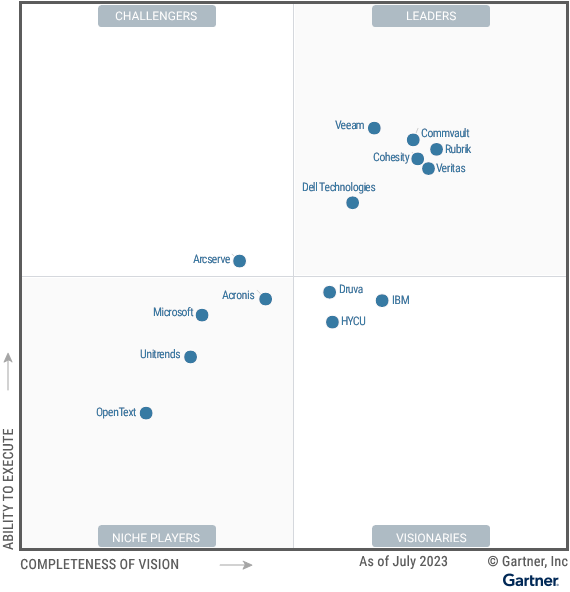

请访问原文链接：Gartner Magic Quadrant for Enterprise Backup and Recovery Solutions 2023 查看最新版。原创作品，转载请保留出处。
作者主页：sysin.org
Gartner 魔力象限：企业备份和恢复解决方案 2023
Published 7 August 2023
魔力象限
随着企业扩大混合云和多云环境以及 SaaS 应用程序的使用，同时管理勒索软件攻击的自适应威胁，I&O 领导者必须不断评估其备份和恢复能力。这项研究提供了对备份和恢复供应商的分析。
市场定义 / 描述：
Gartner 将企业备份和恢复软件解决方案定义为供应商开发的解决方案，可在本地、混合、多云和 SaaS 环境中捕获企业工作负载的时间点拷贝（备份）。这些解决方案将数据写入辅助存储目标，以便在数据丢失时恢复这些数据。它们可以仅作为软件、硬件或虚拟化设备提供，也可以作为基于 SaaS 的备份即服务（BaaS）提供。
无论底层基础设施类型和位置如何，保护和恢复业务应用程序数据现在比以往任何时候都更加重要 (sysin)。随着企业转向包含大量数据的更复杂的环境，企业备份和恢复软件解决方案有望保护这些工作负载，无论它们驻留在本地、混合、多云还是 SaaS 环境中。
企业备份和恢复软件解决方案对于组织在发生导致数据无法访问的事件后恢复数据的能力至关重要。无论事件是意外、恶意还是环境事件，组织都可以利用这些解决方案来有效恢复和恢复对受影响数据的访问。
企业环境中的数据保护管理解决方案必须提供有效的功能来简化复杂 (sysin)。他们还必须通过保护备份数据免受不断变化的威胁环境的影响来确保可靠的恢复，并加快和协调对传统灾难和勒索软件事件的数据恢复响应。
备份和恢复解决方案必须具备的功能包括：
- 备份和恢复本地数据中心基础设施中的数据，包括操作系统、文件、数据库、虚拟机和应用程序
- 备份和恢复位于公共云基础设施（包括多云和混合云）、基础设施即服务 (IaaS)、平台即服务 (PaaS) 和 SaaS 等架构和环境中的数据
- 创建备份的多个时间点副本以支持弹性 (sysin)、灾难恢复和其他用例
- 分配与组织的恢复点和时间目标一致的多个备份和保留策略
- 报告备份 / 恢复任务的成功和失败
备份和恢复解决方案的标准功能包括：
- 将数据分层备份到多个目标，包括公共云、备份和恢复提供商以及对象存储
- 与不可变备份存储目标或备份和恢复供应商自己的不可变 存储集成
- 协调灾难和勒索软件恢复测试和流程
- 用于管理分布式备份解决方案基础设施的集中控制台
该解决方案可以提供的可选功能包括：
- 扩展备份数据用例以支持数据发现、合规性、复制数据管理、测试 / 开发和电子发现
- 保护其他工作负载，包括容器、对象存储、边缘 / 远程分支机构站点和端点
- 供应商开发或集成的勒索软件数据异常和恶意软件检测
- 不可变的数据仓库和 / 或隔离的恢复环境
- 裸机恢复
魔力象限：

领导者（Leaders）：
- Rubrik
- Commvault
- Veritas
- Veeam
- Cohesity
- Dell Technologies
挑战者（Challengers）：见图
有远见者（Visionaries）：见图
特定领域者（Niche Players）：见图
查看完整报告（限期公开）：https://www.gartner.com/doc/reprints?id=1-2ENYVS92&ct=230808&st=sb
如何选择
在特定市场内定位技术参与者。
主要技术市场上有哪些竞争参与者？他们如何为您提供长期帮助？Gartner 魔力象限是对特定市场的巅峰研究，可帮您广泛了解市场竞争对手的相对位置 (sysin)。利用图示法和一系列统一的评估标准，魔力象限可帮助您快速确定技术提供商执行其既定愿景的情况，并参照 Gartner 的市场观点了解其表现。
如何使用 Gartner 魔力象限？
面对特定投资机会考虑技术提供商时，请借助 Gartner 魔力象限迈出第一步。
请记住，专注于领导者象限不一定是最好的行动方案。有充分的理由考虑市场挑战者。特定领域者可能比市场领导者更能满足您的需求。这完全取决于提供商如何与您的业务目标保持一致。
Gartner 魔力象限如何发挥作用？
面对快速增长和提供商差异化明显的众多市场，Gartner 魔力象限用图形化方法划分出四类提供商：
- 领导者很好地执行了当前愿景 (sysin)，并为未来做好了充分准备
- 有远见者了解市场发展方向，或者有改变市场规则的设想，但执行效果不尽如人意。
- 特定领域者成功专注于一个小的细分市场，或者目标不明确，创新和表现未能超越竞争对手。
- 挑战者当前表现很好，或者可能在大部分细分市场占据主导地位，但未表现出对市场方向的了解。
试用领导者产品
相关产品下载如下。
- Rubrik：暂无
- Commvault：
- Veritas：
- Veeam：
- Cohesity：
- Dell Technologies：暂无

文章用于推荐和分享优秀的软件产品及其相关技术，所有软件提供免费版或试用版。内容若侵犯了您的版权，请联系作者删除。如果您喜欢这篇文章，或者觉得它对您有所帮助，亦或发现有不当之处；欢迎发表评论，也欢迎分享这个网站，或者赞赏一下，谢谢！提示：捐赠或赞赏属于自愿赠予行为，提交后即表示您对作者的支持与认可。为避免误操作，请在确认前仔细检查金额，支付完成后将无法撤销或退还。
 支付宝赞赏
支付宝赞赏  微信赞赏
微信赞赏赞赏一下
敬请注册！点击 “登录” - “用户注册”（已知不支持 21.cn/189.cn 邮箱）。 请勿使用联合登录（已关闭）。